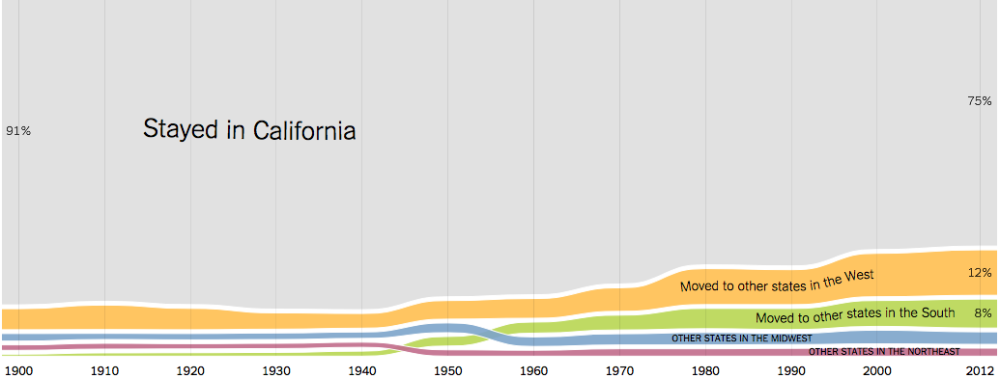

Viewer Choice Presentation
The visualization that I chose for my Viewer Choice presentation shows the current people in the United States of where they are originally from, where they have lived and where they want to live.
Link to Visualization


While guiding yourself through the interactive visualization, one part of the screen is always fragmented on the top. It tells you which state visualization you currently on, gives a drop down menu to access other states in ascending order.

Allows user who is aware of the map of the United States and can geographically pick an individual state that stands out to them in a grander scale.
Yang Hao progress: This week I
Easy Sharability with platforms:
Just having a cool visualization is useless if you dont have someone to share it with. In this visualization, the creators have targeted famous social medias to help spread their visualization to the world.
Some more platforms they could have included:
Each state's information is different based on the people that are born in the state vs people moved there to live there. And depending on what perspective you look at it from, it varies of the information presented to you.
Every state's information is in an ordered form which gives us a huge scrollable selection which can overwhelm the user. Each state contains similar type of information so having a single dynamic graph that changed through a selection process would have benefited in this scenerio.
The chart above shows that we are able to hover over individual contents of the graph, however also lets the user think it is clickable and give us further information. Also notice that the information is redundant as we hovered over "Born in other states in the Midwest", the hoverable box's only useful information is the percentage, but everything else is already stated.
The data points are also broken up by decades so the data is scewed to averages rather than precision. If major events happened begining of the decade, and rest of the years didnt have much activity, we cant tell where concentration of data lies.
It lacks a proper searchability for a specific year, or even comparison to other states directly. The user must locate both charts individually, screenshot and then compare side to side. This puts too much work on the user, and by then the user is uninterested.
The data collected for this study goes until 2012 and above every state's graph there is "new" written. What is new exactly or is this a rushed error that they developers didnt have time to finish. It grabs the attention of the user in a useless way because there is no functionality to this.
The application is well made, however if New York Times could provide a proper link to the application which stays away from News article feel. It feels less interactive and more of a article read since so much put on a single page. The ads arent too invasive but distracting and breaks focus on what matters. When we are looking at a visualization, we want to focus on that entirely, not think about tax seasons, or what other articles are available to read next.
The interactive data visualization was approved by the professor of the course, Dr. Andy Johnson for the Viewer Choice Assignment.
How the Data/Charts was collected:
Data Collecting Reasons/Biases:
The population of Illinois in 1900 that was living there is 20% of population is born outside the US. This could be for a various amounts of reasons since Civil War ended in 1865 and in the north for states like Illinois was the habbitant of the first accepting non whites and immigrants for their freedom. So the population was 20% which was every 1 in 5 were born outside the country. The number for current population is 15% which infers that over time amd acceptance of other states have let them migrate to different states.
In retrospect, Alabama is hard sourthern state, shows us that from 1900-1980, the population born outside the country is 1%. Even after the Civil war and until day now, this could infer a variaty of things. That Alabama was known not for colored people or accepting of immigrants. Or that Immigrants and colored people had their own preconceived notions of the Alabama and chose to not live there.
Racism or acceptance are not the only possible reasons since opportunity in urban areas were more readily available. When immigrants come to this country, they go where the jobs are located and in places they know people in their position have succeeded in the past.
The population of native born Nevada in the 1900 that was living there had 25% moved to California. Nevada is mainly a desert state so looking at geographic and environmental advantages that California had to offer was enticing. Nevada and California are also border states so it makes sense that people will want to go where they can get more opportunities and close in distance.
In retrospect, California in the 1900, residents born in this state: 91% chose to stay here due to its opportunities and resources. However if you look at the current 2010, only 75% of residents live in California. This could be for a variety of reasons like the growth of the Tech hub in california which has caused the rise of cost of living, resources depleting like natural drinking water.
Also the growth of other metropolitian areas have created more jobs and further more tech hubs like Seatle, Chicago, New York, etc. So maybe the concentration of people that want to live in California is normalizing and spreading to other states.